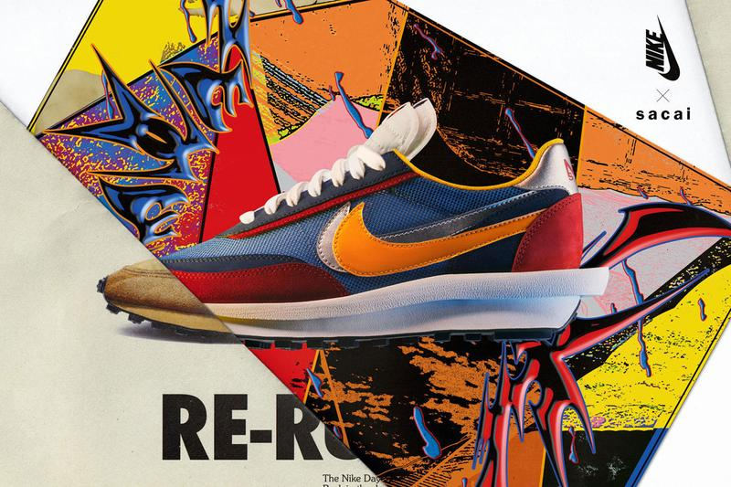
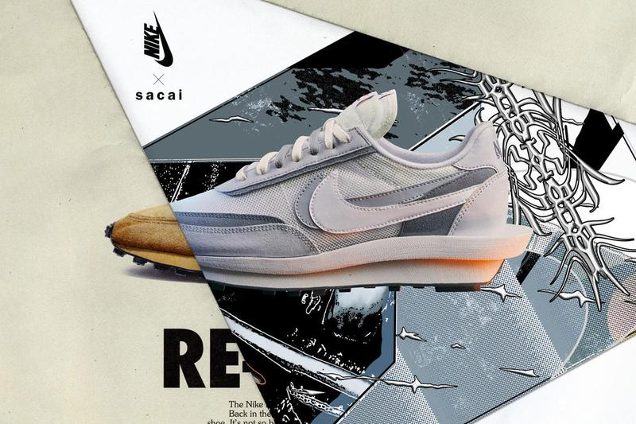

HIGHFASHN
Мода
Обувь
sacai x Nike LDWaffle и Blazer Mid
Официальные даты выпуска и список магазинов
Горячо ожидаемая коллаборация, наконец, должна появиться в магазинах.


Наконец, после нескольких месяцев спекуляций и соблазнительных взглядов, обувь Nike и Sacai должна получить официальный релиз. Оба, LDV Waffle Daybreak, официально названы Nike DayWaffle Daybreak, и Blazer Mid выйдут в этом месяце.
После того, как дата выпуска обуви была неожиданно отсрочена, обувь Nike Sacai стала одним из самых востребованных силуэтов в последнее время. Те немногие счастливчики, которые скупали кроссовки из-за появления в Париже популярного и неожиданного веб-сайта sacai, теперь ищут четырехзначные ценности на подержанном рынке, оставляя мало возможностей для тех, кто пытается заполучить привлекательные, удвоенные силуэты. Хотя маловероятно, что официальный релиз будет намного менее ограниченным, это желанный вариант для всех, кто пропустил первый раз. На официальных коллажах Nike можно увидеть множество цветовых решений, включая некоторые удивительные дополнения. С одной стороны, Blazer Mid можно увидеть в двух ранее замеченных цветовых решениях: «Снежный пляж» и «Черная легенда». Между тем, LDWaffle появляется в знакомых многоцветных сине-зеленых вариациях, наряду с тремя "макияжами", которые еще не выпущенны: две монохромные итерации, появившиеся на показе сезона осень-зима 2019, и зеленовато-розовый вариант с акцентом на желтые и оранжевые галочки.
Нет информации о том, какие цвета появляются в определенных магазинах, но следите за лотереями, связанными с каждым предстоящим "макияжем". Ознакомьтесь с полным списком магазинов ниже и установите свои будильники на 16 мая, чтобы справиться с LDV Waffle Daybreak, и 30 мая для Blazer Mid.